1032D12 timing system protective cover(s) - r + r
- Path
- Procedures > 10 ENGINE > 1032 TIMING SYSTEM > 1032D TIMING SYSTEM PROTECTIONS > 1032D12 timing system protective cover(s) - r + r
- Kind
- repair procedure (removal / refitting; the operation number is the code)
- Applies to
- all engines; all production periods
- Interactive page
- https://sloeber94.github.io/elrnDB-fDbl/en/#/2584206
Applies to: all engines; all production periods
 Removing
Removing
 Refitting
RefittingDisconnect the battery negative terminal.
1. Disconnect the electrical connection for the engine rpm sensor.
 | Name | Connector |
|---|---|---|
1 | RPM sensor | K46 |
2. Open the retaining band and place the electrical wiring for the engine rpm sensor to the side.
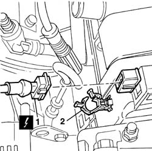
Applies to: all engines; all production periods
Removing
Refitting7055B54 under-engine guard - r r
1092B50 alternator/air conditioner compressor drive belt - adjust tension
1092A10 Crankshaft services PULLEY - R.R.
1. Raise the lift and undo the lower bolts fixing the timing cover.
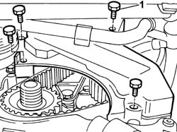
Applies to: all engines; all production periods
Removing
Refitting7055B54 under-engine guard - r r
1092A10 Crankshaft services PULLEY - R.R.
Position a suitable container to collect the fluid from the power steering system.
1. Disconnect quick-release fitting (1a), separate both oil pipes (1b) and drain the fluid into the container.
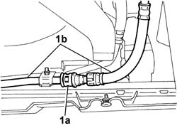
Applies to: all engines; all production periods
Removing
RefittingPosition the vehicle on the ramp.
Proceed with the removal 4450B04 right front wheel r r .
Proceed with the removal 1092G10 single engine belt r r .
Proceed with the removal 1092A10 Crankshaft services PULLEY - R.R. .
Proceed with the removal 1008A46 .
1. Position the tool (1a) on the pressure pump mounting and secure it using the nuts (1b).
 | Name | Country |
|---|---|---|
1a | Mount | 1.860.625.000 |
2. Fit the tool (2a) complete with support mountings (2b) then connect them to the tool fitted previously using the rod (2c).
| Name | Country |
|---|---|---|
2a | Crossmember | 1.870.595.000 |
| Name | Country |
|---|---|---|
2b | Support mountings | 1.870.650.000 |
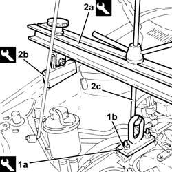
Applies to: all engines; all production periods
1. Disconnect the electrical connection for the timing sensor.
| Name | Connector |
|---|---|---|
1 | Timing sensor | K47 |
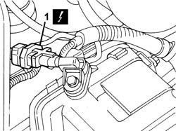
Applies to: all engines; all production periods
1. Lower the lift, undo the bolt (1a) and remove the timing pullies inspection cover (1b), open the band (1c) and move the power assisted steering system pipes (1d) aside.
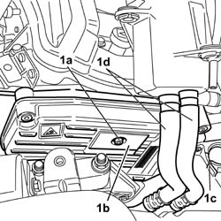
Applies to: all engines; all production periods
Lower the vehicle.
1. Undo the power steering fluid reservoir bolts.
2. Disconnect both pipes (2a) and (2b).
3. Remove the power steering pump fluid reservoir.
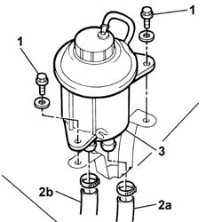
Applies to: all engines; all production periods
Remove the hydraulic lift from underneath the power unit.
1. Undo the bolts (1a) and remove the upper protective timing covers (1b).
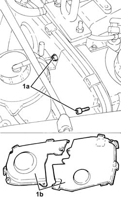
Applies to: all engines; all production periods
1. Undo the side fixing bolt (1a) and remove the upper protective timing cover (1b).
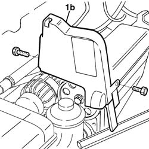
Applies to: all engines; all production periods
1. Undo the upper bolts (1a) and remove the timing belt guard (1b).
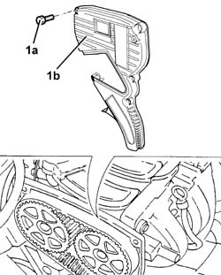
Applies to: all engines; all production periods
Loosen the auxiliary component fixed tensioner retaining bolt without tightening.
1. Unscrew the retaining bolts
2. Remove the lower timing belt guard.
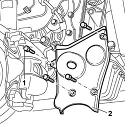
Applies to: all engines; all production periods
1. Undo the bolt (1a) and remove the fixed single drive belt tensioner (1b).
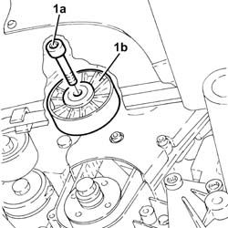
Applies to: all engines; all production periods
1. Disconnect the electrical connection for the timing sensor.
| Name | Connector |
|---|---|---|
1 | Timing sensor | K47 |
2. Open the retaining band and place the electrical wiring for the engine rpm sensor to the side.
Applies to: all engines; all production periods
Refitting
RemovingPosition the protective cover.
Tighten the upper bolts fixing the timing belt protective cover to the recommended torque.
 | Fastening | Component | Ø | Value (daNm) |
|---|---|---|---|---|
- | Bolt | BELT PROTECTION COVER | M6 | 0.7 |
Position the inspection cover on the timing pullies and tighten the fixing bolt.
Position the power assisted steering system pipes on the timing belt cover and close the retaining band.
Raise the vehicle and tighten the lower bolts fixing the timing belt protective cover to the recommended torque.
| Fastening | Component | Ø | Value (daNm) |
|---|---|---|---|---|
- | Bolt | BELT PROTECTION COVER | M6 | 0.7 |
1092A10 Crankshaft services PULLEY - R.R.
1092B50 alternator/air conditioner compressor drive belt - adjust tension
1092B54 alternator/water pump drive belt - adjust tension
Applies to: all engines; all production periods
Release the electrical wiring for the air conditioning compressor.
1. Unscrew the retaining bolts
2. Remove the upper timing belt guards.
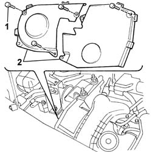
Applies to: all engines; all production periods
1. Undo the bolts (1a) and remove the lower protective timing cover (1b).
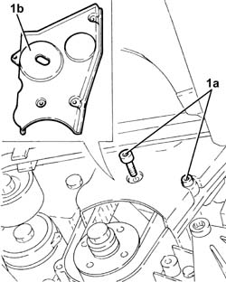
Applies to: all engines; all production periods
1. Undo the fixing bolts (1a) and remove the lower protective timing cover (1b).
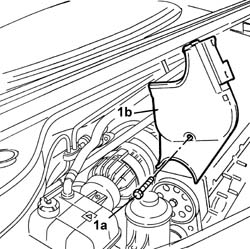
Applies to: all engines; all production periods
Refitting
RemovingFit the upper timing belt guard.
| Fastening | Component | Ø | Value (daNm) |
|---|---|---|---|---|
- | Bolt | BELT PROTECTION COVER | M6 | 0.9 |
Using new retaining bands, position the air conditioning compressor cable on the upper timing belt guard.
Fit the lower timing belt guard.
| Fastening | Component | Ø | Value (daNm) |
|---|---|---|---|---|
- | Bolt | BELT PROTECTION COVER | M6 | 0.9 |
Tighten the bolt securing the fixed auxiliary component tensioner to torque.
| Fastening | Component | Ø | Value (daNm) |
|---|---|---|---|---|
- | Bolt | FIXED SINGLE SERVICE BELT TENSIONER | M10 x 1.25 | 5 |
Fit the power steering pump fluid reservoir.
Disconnect both pipes and tighten the bolts securing the reservoir to the mount.
Secure the power steering fluid pipe to the body.
Top up the fluid level in the power steering reservoir.
 | Type | Component | Name | Qty. |
|---|---|---|---|---|
- | Oli [l] | POWER ASSISTED STEERING CIRCUIT | TUTELA GI/A | - |
Applies to: all engines; all production periods
Refitting
RemovingFit the lower protective timing cover and secure using the bolts.
1. Place the engine components single drive belt fixed tensioner (1a) back in its housing and fix it tightening the bolts (1b) to the recommended torque.
| Fastening | Component | Ø | Value (daNm) |
|---|---|---|---|---|
1b | Bolt | FIXED SINGLE SERVICE BELT TENSIONER | M8 | 2.3 ÷ 2.8 |
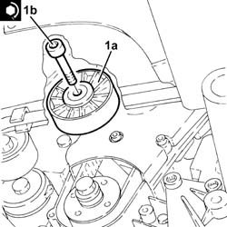
Applies to: all engines; all production periods
Refitting
RemovingFit the lower protection and tighten the fixing bolts.
Fit the upper protection and tighten the fixing bolts.
Reposition the rpm sensor wiring.
Connect the electrical connection for the engine rpm sensor.
| Name | Connector |
|---|---|---|
- | RPM sensor | K46 |
| Name | Connector |
|---|---|---|
- | Timing sensor | K47 |
Secure the electrical wiring for the rpm sensor to the band.
Connect the battery negative terminal.
Applies to: all engines; all production periods
Place the upper protective timing covers back in their housings and secure them using the bolts.
Position the hydraulic lift underneath the power unit.
Remove the safety tools used for supporting the power unit.
| Name | Country |
|---|---|---|
- | Support mountings | 1.870.650.000 |
| Name | Country |
|---|---|---|
- | Crossmember | 1.870.595.000 |
| Name | Country |
|---|---|---|
- | Mount | 1.860.625.000 |
Proceed with the refitting 1008A46 .
Proceed with the refitting 1092A10 Crankshaft services PULLEY - R.R. .
Proceed with the refitting 1092G10 single engine belt r r .
Proceed with the refitting 4450B04 right front wheel r r .
Remove the car from the ramp.
Topics linked from this page (8)
- 1008a46 cam shaft left rigid mount - r r
- 1008b10 power unit front mount (timing side) flexible block - replace
- 1092A10 Crankshaft services PULLEY - R.R.
- 1092B50 alternator/air conditioner compressor drive belt - adjust tension
- 1092B54 alternator/water pump drive belt - adjust tension
- 1092G10 single engine belt r r
- 4450B04 right front wheel r r
- 7055B54 under-engine guard - r r
Topics that link to this page (37)
- 0510A20 timing gear with belt drive - check - carry out operation with cam cover(s) removed and tappets adjusted
- 0510A30 cam lift - check with cam cover(s) removed
- 1016B20 lh cylinder head extension - replace gasket
- 1016B24 rh cylinder head extension - replace gasket
- 1016C10 cylinder head - r + r and replace gasket
- 1016C11 single cylinder head-r r gasket for versions with air conditioner
- 1020D12 front crank shaft oil seal cover - r + r and replace seals
- 1020D14 front crank shaft oil seal cover - r + r and replace seals for versions with oil pump on crank shaft, timing side
- 1020D16 front crankshaft oil seal cover - r+r and replace gaskets for versions with airconditioner
- 1020D18 front crank shaft cover oil seal - replace
- 1020D20 front crankshaft cover oil seal - replace for versions with air conditioner
- 1028H20 piston with connecting rod - r r
- 1028H21 piston with connecting rod - r r
- 1032B10 toothed timing belt - r + r for timing adjustment or replacement
- 1032B14 TOOTHED TIMING BELT - R + R FOR TIMING ADJUSTMENT OR REPLACEMENT VERSIONS WITH AIR CONDITIONING
- 1032B46 toothed drive pulley - r + r
- 1032B47 toothed drive pulley - r r for versions with air conditioner
- 1032B52 toothed driven pulley (one) - r + r
- 1032B53 driven toothed pulley (one) - r r for versions with air conditioner
- 1032B60 bolt pulley - r r
- 1032C18 mobile timing system tensioner - r + r for 24 valve engines
- 1032C19 mobile timing belt tensioner - r r for versions with air conditioner
- 1032C32 fixed timing system tensioner (one) r + r
- 1032C42 timing belt tensioner mount - r r
- 1032D34 timing system guard assemblies - r + r
- 1036B10 overhead camshaft - r r on vehicle
- 1036G10 camshaft controlling exhaust valves in top head - r + r with top head removed - includes replacement of top head
- 1036G20 camshaft controlling intake valves in top head - r + r with top head removed - includes replacement of top head if necessary
- 1060A10 injection pump - r + r
- 1060A34 injection pump toothed pulley - r + r with timing belt removed
- 1060A70 injection pump mount r r
- 1060E10 pressure pump - r r
- 1060E30 pressure pump pulley - r r
- 1060G22 cam angle sensor - r r
- 1072B10 inlet manifold - r + r and replace seal
- 1088C10 water pump - r + r
- 1088C12 water pump - r+r for versions with air conditioner